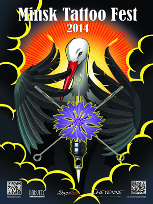
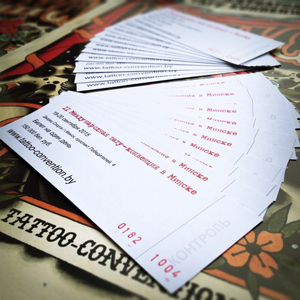
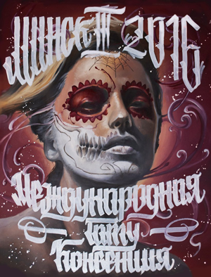

Как прошел фестиваль татуировки 2014 в Минске
Это было первое подобное мероприятие на территории Республики Беларусь, и, надо сказать, оно удалось на все 100%. Организаторы были на высоте. Несмотря на огромное количество участников, все были достойно встречены, размещены, обеспечены всем необходимым для работы, хотя для Алексея Новикова организация фестиваля подобного масштаба была первым подобным опытом. В течении двух дней можно было наслаждаться процессом создания татуировок, оценить уникальные мотоциклы и велосипеды, пообщаться с мастерами и их моделями. Всего работало около семидесяти боксов, истинные профессионалы своего дела создавали шедевры на глазах у публики. Для всех желающих на специальном стенде ребята собирали машинки и предоставляли возможность попробовать себя в качестве татуировщика, а в качестве моделей были бананы. На второй день на фестивале проходил конкурс по боди-арту, тематикой для конкурса стали известные и всеми любимые герои фантастических фильмов. Мастера работали в течении пяти часов, после чего были подведены итоги конкурса, а все желающие фотографировались с моделями. Конкурсная программа фестиваля была насыщенной – модели демонстрировали работы во всех возможных стилях, а авторитетное жюри выбирало лучших из лучших. Как и на каждой крупной конвенции, в Минске прошел конкурс Tattoo Queen. Звание королевы получила Татьяна Булавко. Ну а приз зрительских симпатий достался Дарене Спириной. В качестве гран-при фестиваля был блок-питания от Jack & Alex Customs, эксклюзивная модель ручной работы. Этот приз (и еще три награды) увез с собой Минский тату-мастер Ян Вилкс.
От тату до пирсинга: II Международная тату-конвенция прошла в Минске
Второй год подряд в Минске проходит Международная тату-конвенция - двухдневная выставка достижений тату-индустрии. В этом году она собрала более 70 тату-мастеров из Беларуси, России, Украины и Польши. В рамках тату-конвенции прошли конкурсы на лучшую татуировку в номинациях: "Реализм", "Портрет", "Большая татуировка", "Цветная татуировка", "Cover-up", "Традиционная татуировка", "Неотрадиция", "Орнаментальная татуировка, лайнворк и дотворк", "Японская татуировка" и "Чёрно-белая татуировка". Звук работающих тату-машинок был слышен повсюду: десятки мастеров — от профессионалов мирового уровня до молодых талантов — собрались вместе, чтобы для любого человека тату-искусство могло стать понятнее и ближе. Ближе, как оказалось, в прямом смысле слова: татуировки делаются прямо на глазах у посетителей — это отличная возможность увидеть мастера в деле и получить от него консультацию. Особенно полезно для тех людей, которые уже решились на новую татуировку, но пока не выбрали тату-мастера по душе. Помимо этого, на II Международной тату-конвенции можно посмотреть и приобрести всевозможное тату-оборудование, одежду и аксессуары, предметы для пирсинга (также можно сделать пирсинг на месте), увидеть экспозицию авторских мотоциклов. На фестивале можно было присмотреться к понравившемуся эскизу или заказать новый рисунок, сфотографироваться с боди-арт моделями, а также увидеть предметы интерьера в стиле "стимпанк". Для гостей тату-конвенции спела белорусская группа "Аддис Абеба", кроме неё в столичном Дворце Спорта выступили "Туфли Гну", "SHUMA", "Mental Bait", "Bad Rules".
Боль, которой можно гордиться: третья тату-конвенция прошла в Минске 21.11.2016
Татуировки всегда были “горячей” темой. Десятилетиями они воспринимались как символ беззакония, а после - пустого бунтарства. В наши дни нательные рисунки наконец признаны широкой общественностью как одно из проявлений художественного мастерства и креатива. Негатив изживает себя, и все больше людей стремятся воплотить свои идеи в жизнь. Не последнюю роль в этом играют конвенции и фестивали, на которых можно поближе познакомиться с культурой татуировки. В эти выходные, 19 и 20 ноября, во Дворце Спорта прошла III Международная тату-конвенция, где можно было оценить работу лучших мастеров Беларуси и ближнего зарубежья. Войдя в павильон, кажется физически невозможным сфокусироваться на чем-то одном - моментально оказываешься среди ярких вещей и красивых людей. Между тем, по залу Дворца Спорта разносится мерное жужжание тату-машинок: мастера с самого утра начинают работать с клиентами, которые согласились на эти два дня стать главными экспонатами мероприятия. Под одной крышей организаторы объединили представителей самых разных субкультур и творческих направлений. Посетителей ждала армия талантливых ремесленников, шоу-рум, озера кофе, old school-видеоигры и множество вещей, мимо которых просто так не пройти: непременно захочется унести что-нибудь с собой - если не красочный эскиз, то как минимум деревянный магнит. Не стоит забывать и о конкурсной программе конвенции. В этом году она оказалась весьма внушительной: например, в номинации на лучшую монохромную татуировку было заявлено четыре десятка работ, из-за чего судьям пришлось нелегко. По сложившейся традиции, имена мастеров оставались тайной до объявления победителей.